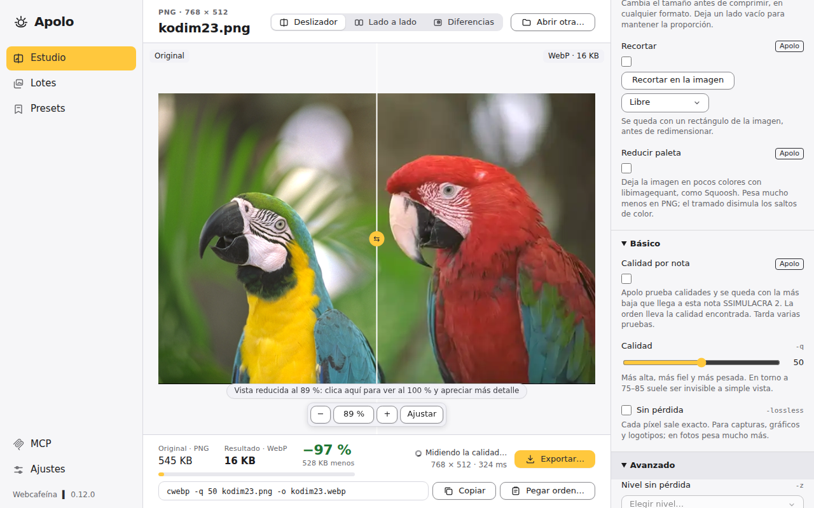
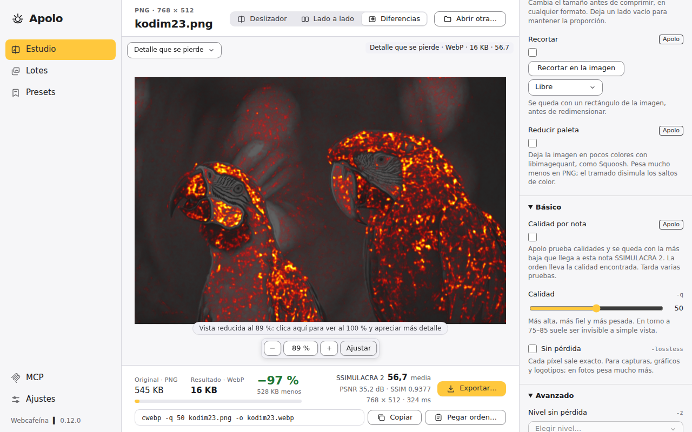
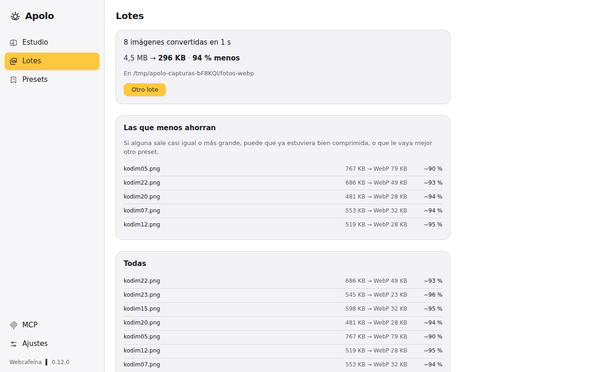
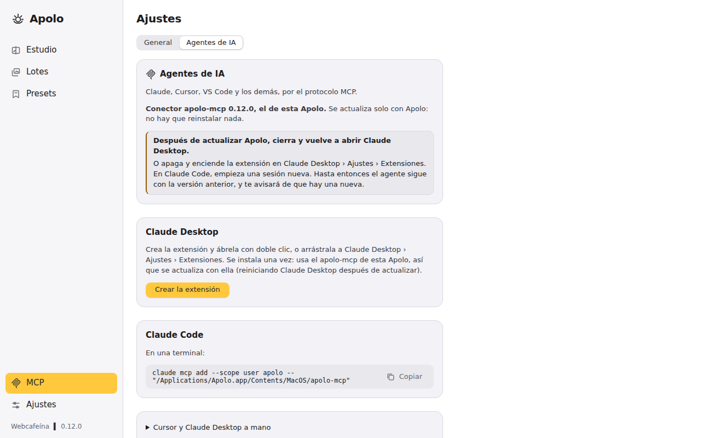

El mismo fichero que las herramientas oficiales
cwebp, cjpeg, oxipng, avifenc y cjxl van
dentro de Apolo y dan el mismo fichero, byte a byte. Usas todas sus opciones viéndolas, y copias la
orden equivalente.

Con los motores de Squoosh: WebP, AVIF, JPEG XL, MozJPEG, OxiPNG y QOI. El mismo fichero que las herramientas oficiales, y el resultado se ve al momento.
Versión 0.12.0 · macOS, Windows y Linux · gratis y libre (GPLv3)

Comparas el original y el comprimido con un deslizador, ves cuánto pesa y dónde se pierde calidad, y ajustas hasta que te convence.
cwebp, cjpeg, oxipng, avifenc y cjxl van
dentro de Apolo y dan el mismo fichero, byte a byte. Usas todas sus opciones viéndolas, y copias la
orden equivalente.
SSIMULACRA 2, PSNR y SSIM, un mapa de dónde se pierde detalle y la calidad por nota: Apolo busca la más baja que no se distingue del original.
Afinas una imagen, guardas el ajuste como preset y lo aplicas a carpetas enteras, con sus subcarpetas y sin sobrescribir nada.
Como en Squoosh, y en cualquier formato: el recorte, con el ratón y con proporciones.
HEIC, además de PNG, JPEG, WebP, AVIF, JPEG XL, TIFF, GIF, BMP, QOI y PNM, y las endereza según su orientación.
Tus imágenes no salen de tu ordenador. Con fotos de 24 megapíxeles se queda en unos 2 GB de memoria, también en lotes de cientos: cabe en un Mac de 8 GB.
El modo Diferencias pinta dónde se aleja el resultado del original. Con la nota SSIMULACRA 2, la misma que da la herramienta de libjxl, sabes si se va a notar antes de publicarlo.

Sueltas una carpeta en Lotes y la convierte en paralelo, a uno o varios formatos, con un preset o buscando una nota.
foto-2.webp.
Desde Claude, Cursor, VS Code o cualquier agente que hable MCP: analiza, optimiza, compara formatos a la misma calidad, mide, recorta y convierte carpetas, con los motores de Apolo y en tu ordenador. Nunca sobrescribe ni borra.
El servidor va dentro de la aplicación y se actualiza con ella. En Apolo, la fila MCP tiene lo que hay que copiar para cada agente y la extensión de Claude Desktop. En Claude Code:
# macOS claude mcp add --scope user apolo -- "/Applications/Apolo.app/Contents/MacOS/apolo-mcp" # Windows claude mcp add --scope user apolo -- "%LOCALAPPDATA%\Apolo\apolo-mcp.exe" # Linux (.deb, .rpm y AUR) claude mcp add --scope user apolo -- /usr/bin/apolo-mcp

apolo hace lo mismo que la ventana, con los mismos presets, para tus
scripts. apolo webp, jpeg y png aceptan las opciones de
cwebp, cjpeg y oxipng; apolo avif y jxl son
avifenc y cjxl.
# Con Homebrew, en macOS y Linux
brew install webcafeina/apolo/apolo
apolo webp -q 80 foto.jpg -o foto.webp
apolo avif -q 60 foto.png foto.avif
apolo lote fotos/ --formato webp,avif --mas-ligero
apolo medir foto.png foto.webp
También en las descargas, sin Homebrew. En inglés con --idioma en.
La versión 0.12.0. Una vez instalada, Apolo avisa de las nuevas y se actualiza con un clic.
| Sistema | Aplicación | Línea de órdenes | Claude Desktop |
|---|---|---|---|
| macOS 11 o posterior Apple Silicon e Intel |
.dmg | tar.gz | .mcpb |
| Windows 10 y 11 x64 |
.exe | zip | .mcpb |
| Windows 10 y 11 ARM64 |
.exe | zip | .mcpb |
| Linux Debian, Ubuntu, Fedora, openSUSE, Arch · amd64 |
.deb · .rpm · AppImage | tar.gz | — |
| Linux Debian, Ubuntu, Fedora, openSUSE, Arch · arm64 |
.deb · .rpm · AppImage | tar.gz | — |
Apolo no está firmada: ábrela y, en Ajustes del Sistema › Privacidad y seguridad, pulsa «Abrir
igualmente». Si dice que está dañada: xattr -dr com.apple.quarantine /Applications/Apolo.app.
O con Homebrew: brew install --cask webcafeina/apolo/apolo.
SmartScreen avisa porque no está firmada: «Más información» › «Ejecutar de todos modos».
Mejor con tu gestor de paquetes (abajo). Si no, el paquete suelto:
sudo apt install ./Apolo_X.Y.Z_amd64.deb o sudo dnf install ./Apolo-X.Y.Z-1.x86_64.rpm.
La AppImage vale para cualquier distribución: chmod +x y abrirla.
Apolo se instala y se actualiza con los de tu sistema. Los repositorios están firmados con la clave de Apolo.
# Debian y Ubuntu sudo install -dm755 /etc/apt/keyrings sudo curl -fsSLo /etc/apt/keyrings/apolo.asc https://apolo.webcafeina.com/apolo.asc sudo curl -fsSLo /etc/apt/sources.list.d/apolo.sources https://apolo.webcafeina.com/apt/apolo.sources sudo apt update && sudo apt install apolo # Fedora sudo curl -fsSLo /etc/yum.repos.d/apolo.repo https://apolo.webcafeina.com/rpm/apolo.repo sudo dnf install apolo # openSUSE sudo zypper addrepo https://apolo.webcafeina.com/rpm/apolo.repo sudo zypper install apolo # Arch, Manjaro, EndeavourOS, CachyOS (AUR) yay -S apolo-bin
Todas las versiones en GitHub,
con SHA256SUMS.txt para comprobar cada fichero.